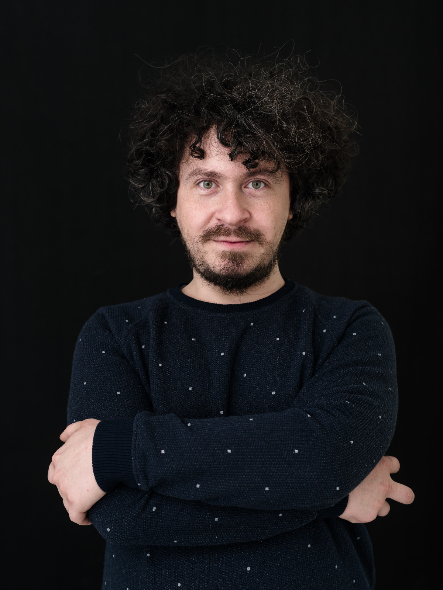
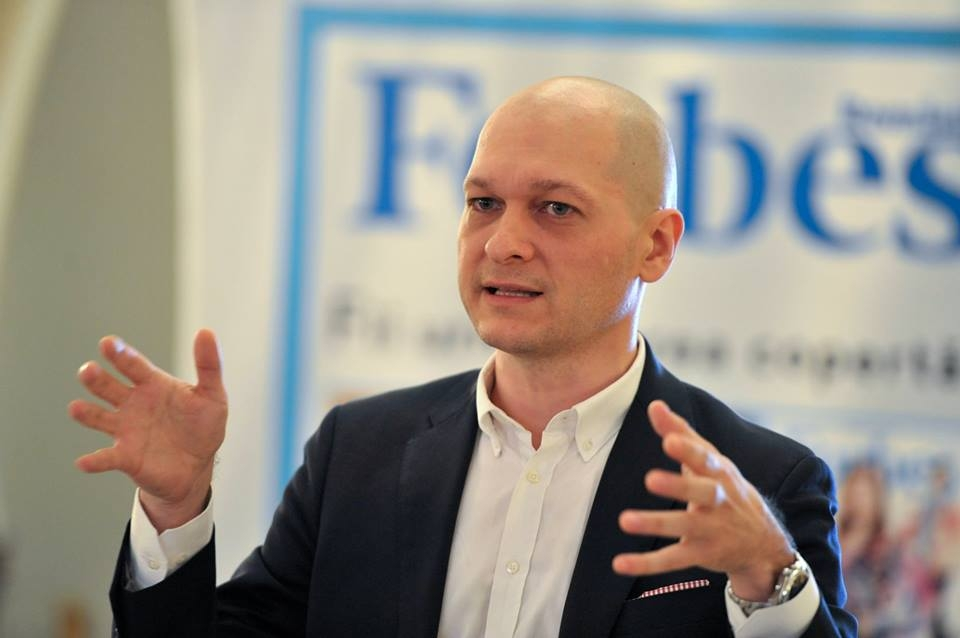
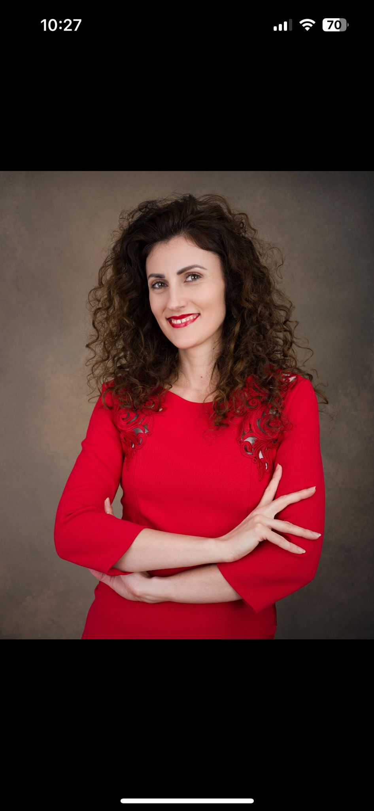
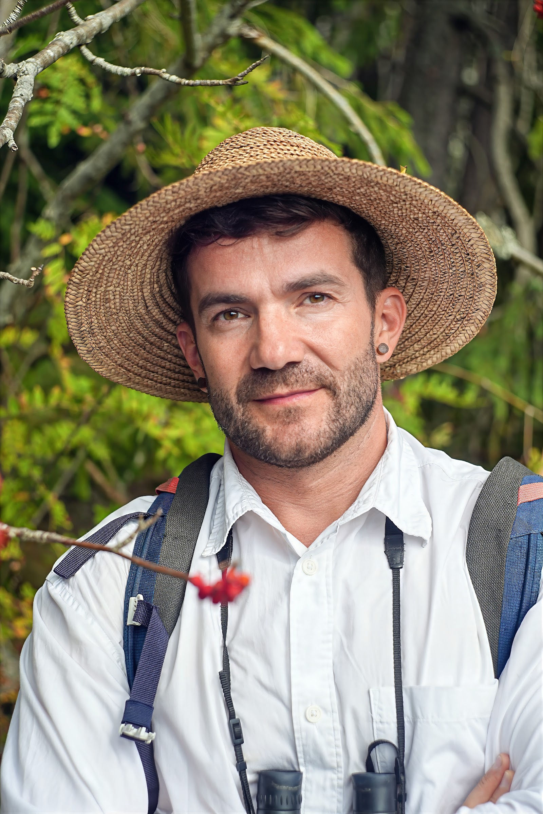
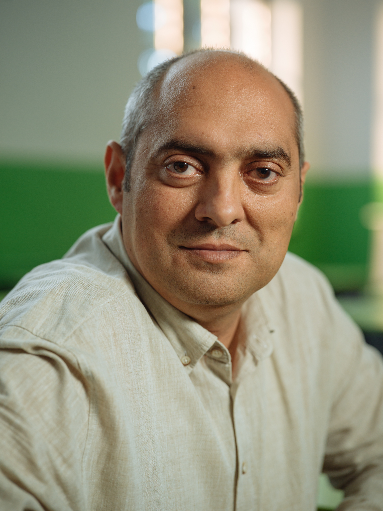
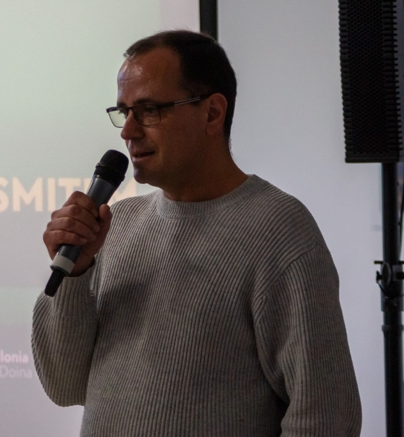

Brașov Science, Education & Technology Festival
Primul festival de știință și educație din Brașov, organizat de Asociația District Hub
Brașov Science, Education & Technology (SETbv) a ajuns la a cincea ediție și acest lucru se datorează celor care, în diverse forme, au susținut această idee. El a pornit ca un răspuns la multele probleme pe care le identificam în societatea noastră (educația științifică precară, extinderea manipulării și apelul la pseudoștiințe) și a ajuns să fie un festival cu o identitate proprie în spațiul cultural local și național.
SETbv 2026 se desfășoară în cinci zile din luna noiembrie și, din acest punct de vedere, el poate să fie considerat un festival atipic: zilele de festival sunt 5, 6, 7, 20 și 21 noiembrie. Evenimentele sunt deschise publicului larg, accesul fiind liber, și propunem anul acesta conferințe, dezbateri și workshopuri. Invitații noștri au acceptat dialogul cu publicul pentru a clarifica aspectele diverse ale temei de anul acesta, Imagine, cuvânt și realitate, iar subiectele propuse vizează probleme din filosofie, psihologie, istorie, biologie și sociologie.
Ediția din 2026 este despre ceea ce noi numim comunitatea SETbv, oamenii care au făcut posibil acest festival: sponsori, invitați, parteneri, voluntari și, nu în ultimul rând, publicul. Poveștile noastre, sintetizate în 5 ani în 5 zile, sunt concordante cu valorile pe care le-am promovat de la prima ediție: dialogul civilizat, critica rațională și înțelegerea mai bună a ideilor noastre, toate acestea fiind îmbrăcate în atmosfera relaxantă, deschisă și plină de umor a întâlnirilor din cadrul SETbv.
Toate evenimentele se desfășoară la Hotel ARO PALACE (Brașov), Sălile Europa 1 & Europa 2. Accesul este gratuit în limita locurilor disponibile.
Susținut de: Adrian Sandu, Asociația District Hub
Susținut de: Constantin Vică, Facultatea de Filosofie, Universitatea din București
Susținut de: Adrian Sandu, Asociația District Hub
Susținut de: Dragoș Iliescu, Facultatea de Psihologie, Universitatea din București
De Thomas Cathcart și Daniel Klein • Prezentat de: Asociația District Hub
Susținut de: Adrian Sandu, Asociația District Hub
Susținut de: Georgiana Țăranu, Facultatea de Istorie, Universitatea Ovidius din Constanța
Susținut de: Adrian Sandu, Asociația District Hub
Susținut de: Alexandru Stermin, Facultatea de Biologie, Universitatea Babeș-Bolyai din Cluj-Napoca
De Thomas Cathcart și Daniel Klein • Prezentat de: Asociația District Hub
Susținut de: Victor Ilie, jurnalist de investigație
Susținut de: Gelu Duminică, Facultatea de Sociologie, Universitatea din București
Cinci întâlniri de referință cu personalități din mediul academic și cultural, explorând tema centrală Imagine, cuvânt și realitate.

Facultatea de Filosofie, Universitatea din București
O conferință dedicată intersectării dintre conștiința umană în formare și emergența noilor inteligențe sintetice. Cum transformă tehnologiile digitale și algoritmii felul în care tinerii își construiesc identitatea, relațiile și imaginea de sine? O explorare filosofică și etică a transformărilor profunde prin care trece civilizația noastră în era digitală.

Facultatea de Psihologie, Universitatea din București
Ne place să credem că vedem lumea așa cum este și că, dacă ne înșelăm, e din vina altora: a celor care ne manipulează, a știrilor false, a rețelelor sociale. Adevărul e mai incomod — cele mai convingătoare minciuni sunt cele pe care ni le spunem singuri, iar oamenii inteligenți și educați nu sunt deloc scutiți de ele. Dimpotrivă, sunt adesea mai buni la a-și justifica elegant ceea ce voiau oricum să creadă. Pornind de la câteva experimente clasice ale psihologiei (un singur cuvânt care ne rescrie amintirile, o imagine care bate orice statistică, convingerea că noi, spre deosebire de ceilalți, suntem obiectivi), prezentarea încearcă să arate cum ne construim, zi de zi, o realitate comodă. Gândirea critică apare aici ca un obicei al minții, poate cel mai greu de format: acela de a ne întreba, sincer și habitual, ce ne-ar putea face să ne răzgândim.

Facultatea de Istorie, Universitatea „Ovidius” din Constanța
Cum ne devine cineva dușman? Dar un întreg grup de oameni? Cum ajungem să-i urâm, uneori, doar pentru că există, fără să ne fi făcut nimic? Cum se fabrică ura în istorie? Coborâm în subteranele urii pentru a desluși câteva dintre mecanismele acesteia. Pe una din trepte vom găsi cuvintele: primul mod prin care comprimăm ura împotriva unor categorii de oameni. Mai coborâm o treaptă și dăm de imagini: picturi, gravuri, caricaturi care îl demonizează pe Celălalt. Încă o treaptă și ne întâmpină pseudoștiința, cu cifre convocate să dea o falsă impresie de obiectivitate și legitimitate motivelor din spatele urii.

Facultatea de Biologie, Universitatea Babeș-Bolyai din Cluj-Napoca
Firul roșu al conferinței îl reprezintă călătoriile făcute în comunități indigene din Brazilia și Vietnam, gândite ca un exercițiu de antropologie inversă. Ideea centrală ține de relația noastră cu Natura și de felul în care această relație ne ajută să „metabolizăm" întrebările existențiale legate de identitate, stare de bine, libertate, iubire, moarte și sensul existenței. Ideea de fond a întâlnirii noastre vine ca un îndemn de a încerca să înțelegem lumea pășind în mijlocul ei, privind în jurul nostru, îndrăznind să scoatem capul din mediul cultural în care ne-am format.

Facultatea de Sociologie, Universitatea din București
În era fotografiilor perfecte și a poveștilor atent filtrate, ce rămâne dincolo de imagine? Pornind de la volumul Viața în doi și jumătate, explorăm cum cuvintele, așteptările și narațiunile sociale modelează viața de cuplu și experiența parentalității. O conversație sinceră despre diferența dintre ceea ce arătăm, ceea ce spunem și ceea ce trăim cu adevărat.
Sesiuni interactive de formare cu certificare de participare, dedicate dezvoltării gândirii critice, culturii democratice și securității digitale.
Pentru mulți dintre noi, democrația pare să fie ceva de la sine înțeles. Uităm însă că regimul democratic este un câștig recent și fragil în istoria umanității. Workshopul are ca obiectiv explorarea cauzelor și mecanismelor care conduc la degradarea democrației și la ascensiunea autoritarismului:
Trăim într-un univers digital în care avem identități virtuale zilnice. Dar cum ne protejăm cu adevărat datele și cum filtrăm fluxul masiv de manipulare? Un workshop practic orientat pe trei piloni esențiali:
Cercetători, profesori universitari, exploratori și jurnaliști care aduc știința vie în dialog cu comunitatea brașoveană.
Constantin Vică a obținut titlul de doctor în filosofie în anul 2011, cu o teză axată pe tehnologia web și provocările sale de ordin moral, cognitiv și politic. Principalele sale domenii de cercetare includ etica aplicată, etica informației, filosofia inteligenței artificiale și neurotehnologiile. De-a lungul carierei, a publicat numeroase articole de specialitate și volume de autor, printre cele mai recente numărându-se lucrarea „Civilizație algoritmică și viața în lumea digitală”. Ocupă funcția de director adjunct în cadrul Centrului de Cercetare în Etică Aplicată.
Dragoș Iliescu este doctor în psihologie, specialist în psihologie organizațională, psihometrie și evaluare psihologică și educațională, fiind de asemenea profesor extraordinar la Universitatea din Stellenbosch, Africa de Sud. Activitatea sa vizează dezvoltarea instrumentelor de testare și aplicarea științei psihologice în viața cotidiană. A fost președinte al International Test Commission și autor a numeroase publicații științifice de referință internațională.
Georgiana Țăranu și-a obținut doctoratul în istorie la Institutul de Istorie „Nicolae Iorga” al Academiei Române, cu o cercetare dedicată relațiilor istorice și intelectuale dintre România și Italia. Domeniile sale de cercetare includ naționalismul românesc, fascismul italian și relația dintre intelectuali și regimurile totalitare, având stagii de cercetare în arhivele din Roma și Vatican. În 2025 a publicat volumul „Nicolae Iorga și seducția fascismului italian”.
Cadru didactic la Facultatea de Biologie și Geologie a UBB Cluj-Napoca, Alexandru N. Stermin a studiat biologia și teologia, a absolvit un masterat în filosofie și s-a format în psihoterapie pozitivă. A participat la expediții în jungla Americii de Sud și în Siberia, explorând relația profundă dintre oameni și natură. Este autorul cărților „Călătorie în jurul omului” și „Căzuți din junglă”, fiind un promotor dedicat al conservării naturii și al popularizării științei.
Gelu Duminică este un cunoscut sociolog român și activist pentru drepturile omului, profesor asociat la Universitatea din București și director executiv al Fundației Agenția de Dezvoltare Comunitară „Împreună”. A făcut parte din comisiile prezidențiale și Consiliul Economic și Social, promovând dezvoltarea comunitară, combaterea discriminării și dialogul social deschis și empatic.

Adrian Sandu este profesor de științe socio-umane de aproape 20 de ani, inițiatorul și coordonatorul Seminarului de Filosofie din Brașov și al festivalului SETbv. A coordonat proiecte reprezentative pentru comunitatea locală precum Conferințele Șaguna și Noaptea Cercetătorilor Europeni, susținând activ dezvoltarea gândirii critice și educația civică în parteneriat cu tinerii.
Victor Ilie este un jurnalist de investigație recunoscut pentru proiecte de responsabilitate publică, analiza bazelor de date de stat și investigarea rețelelor de dezinformare online. În cadrul SETbv 2026, susține un atelier intensiv axat pe protecție digitală, trasabilitatea știrilor false și transparența guvernării.